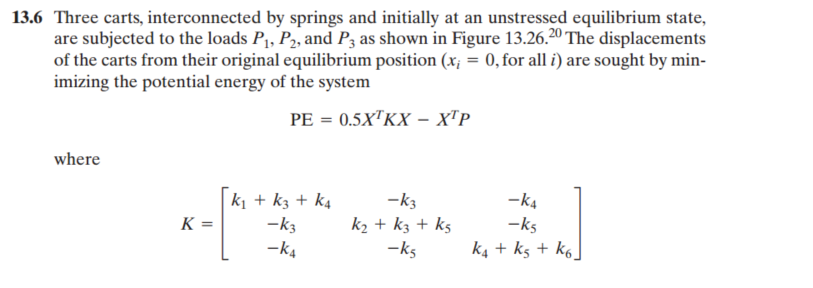
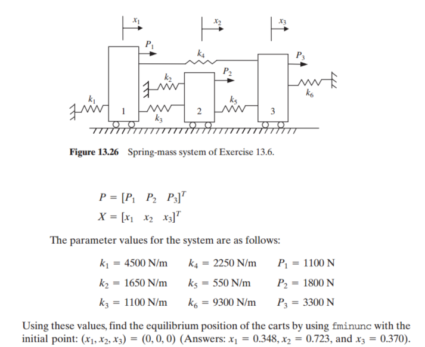
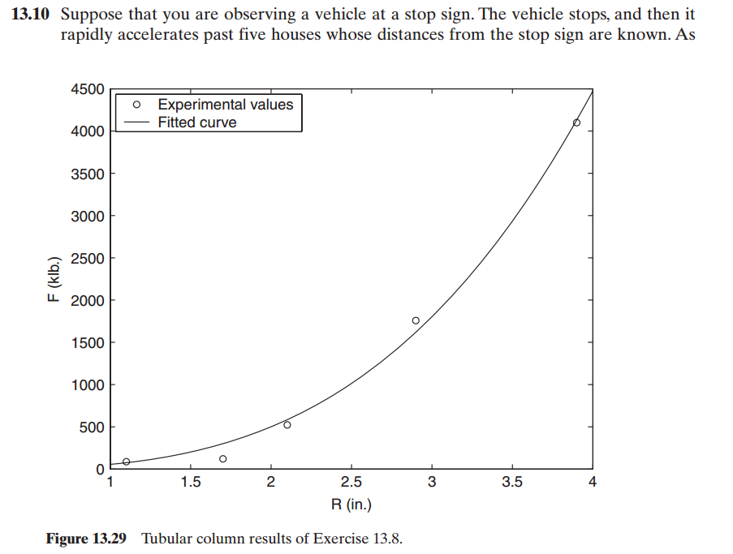
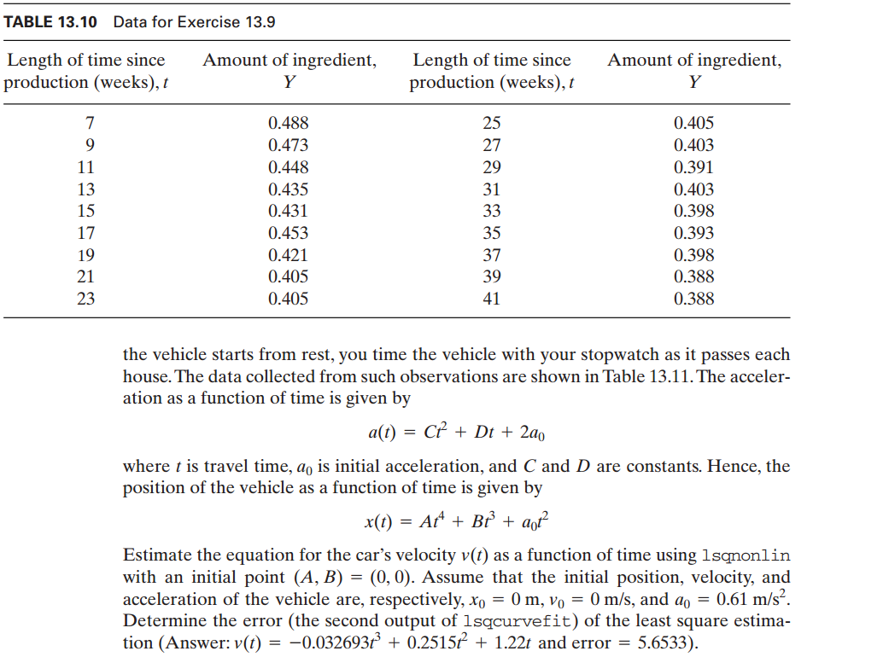
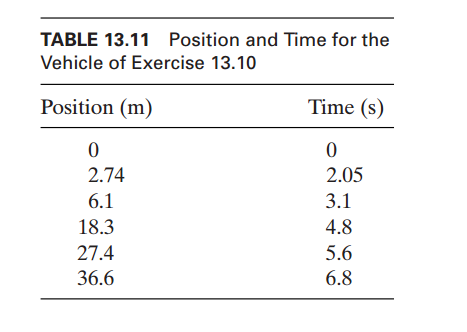
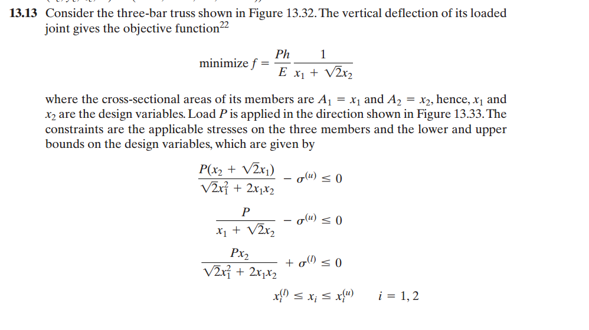
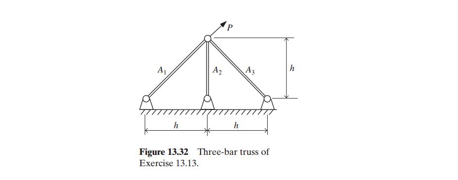
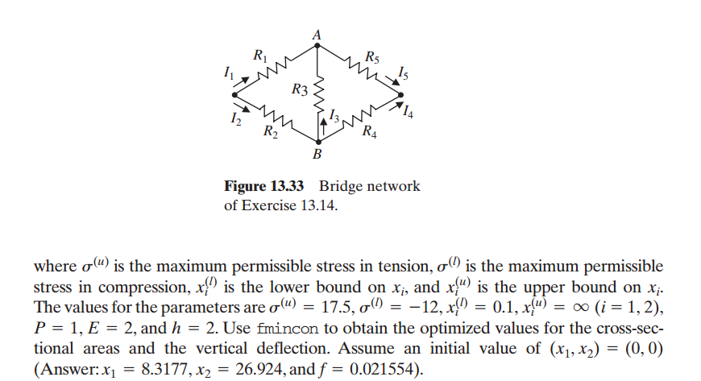
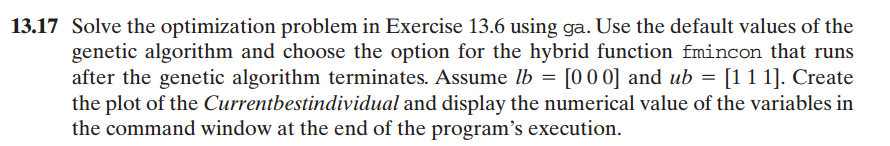
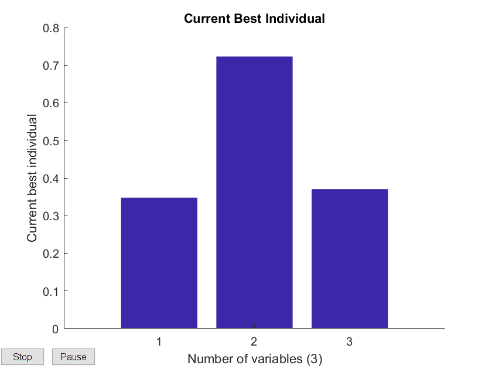

习题6


这道题让我们求解整个系统的平衡位置，也就是求解使系统势能PE达到最小时的位置坐标，可以用fminunc来求解
P = [1100; 1800; 3300];
k1 = 4500;k2 = 1650;k3 = 1100; k4 = 2250; k5 = 550; k6 = 9300;
K = [k1+k3+k4 -k3 -k4; -k3 k2+k3+k5 -k5; -k4 -k5 k4+k5+k6];
x_0 = [0;0;0];
options = optimset('LargeScale', 'off', 'display', 'off'); %使用 medium-scale optimization algorithm
func_PE = @(x,P,K)(0.5*x'*K*x-x'*P);
[xopt, fopt] = fminunc(func_PE, x_0,options,P,K);
xoptxopt =
0.3476
0.7230
0.3702所以当 \(x_1=0.3476, x_2=0.7230,x_3=0.370 \)时，PE取到最小值，也就是平衡位置
习题10



这道题有两问，第一问是让我们用lsqnonlin计算出v(t)的表达式，第二问是让我们用lsqcurvefit求出x(t)的表达式然后再求出计算值与真实值之间的error
%a
t = [0 2.05 3.1 4.8 5.6 6.8];
pos = [0 2.74 6.1 18.3 27.4 36.6];
a_0 = 0.61;
func_x_nonlin = @(x,t,pos)(a_0*t.^2+x(1)*t.^3+x(2)*t.^4-pos);
[x, resnorm] = lsqnonlin(func_x_nonlin, [0,0], [], [], [],t, pos);
B = x(1);
A = x(2);
fprintf('v(t) = %f t^3 + %f t^2 + %g t \n',[A*4,B*3,a_0*2])
fprintf('error = %g',resnorm)Local minimum found.
Optimization completed because the size of the gradient is less than
the default value of the optimality tolerance.
v(t) = -0.032693 t^3 + 0.251498 t^2 + 1.22 t
error = 5.65333下面用lsqcurvefit求error
%b
func_x_curvefit = @(x,t)(a_0*t.^2+x(1)*t.^3+x(2)*t.^4);
[x, resnorm] = lsqcurvefit(func_x_curvefit, [0,0],t,pos);
fprintf('the error of the least square estimation is %g',resnorm)Local minimum found.
Optimization completed because the size of the gradient is less than
the default value of the optimality tolerance.
the error of the least square estimation is 5.65333习题13



这道题是一道 ‘nonlinear multivariable constrained optimization problem’ 需要用到 fmincon函数来求解在多个限制条件下的最值问题。
sigma_u = 17.5;
sigma_l = -12;
lb = [0.1,0.1];
ub = [inf, inf];
P = 1;
E = 2;
h = 2;
options = optimset('Algorithm', 'active-set'); %使用 'active-set' 算法
x_0 = [0,0];
[x,f] = fmincon(@func_13_13_f, x_0, [], [], [], [], lb, ub, @func_13_13_con, options, sigma_u,sigma_l,P,E,h);x =
17.2573 24.3641
f =
0.0193发现得出的结果跟答案并不一致，通过观察上面的不等式条件，发现 \( x_1 , x_2 \)可以取到无穷大的值使得这些不等式条件都是满足的，当 \( x_1 , x_2 \)取到无穷大时，\( f \)的值会趋于无穷小的值，我们给定的初始点是\( (0,0) \), fmincon函数会在这个初始点附近找到极小值就会停下，而这个极小值就是上面算出的，上面算出的答案不仅满足所给的不等式条件，而且求出的\( f \)也比答案中给的\( f \)小, 所以为什么会出现答案和我计算的结果不一样的情况？我觉得应该是书上的程序用的matlab版本与我现在用的R2017 a不一样，2017 a可能重新改写了fmincon这个函数，使得它在寻找给定初始点附近的最小值时能够越过一些极小值点，找到更小的那个极小值。
函数func_13_13_f代码
function f = func_13_13_f(x,sigma_u,sigma_l,P,E,h)
f = P*h/(E*(x(1)+sqrt(2)*x(2)));
end函数func_13_13_con代码
function [C,Ceq]=func_13_13_con(x,sigma_u,sigma_l,P,E,h)
C(1) = P*(x(2)+sqrt(2)*x(1))/(sqrt(2)*x(1)^2+2*x(1)*x(2)) - sigma_u;
C(2) = P/(x(1)+sqrt(2)*x(2)) - sigma_u;
C(3) = P*x(2)/(sqrt(2)*x(1)^2+2*x(1)*x(2)) + sigma_l;
Ceq = [];
end习题17

这道题让我们用ga函数计算13.6题中的PE最小值然后画出current best dividual，并且限定了lb和ub的范围，然后我们以ga算出来的x为初始值代入fmincon函数中，这样得出的x一定是相当精确的。
lb = [0 0 0];
ub = [1 1 1];
options1 = gaoptimset;
options1 = gaoptimset(options, 'PlotFcns', {@gaplotbestindiv});
[x, V] = ga(@func_13_17_f, 3, [], [], [], [], lb, ub,[],options1);
options2 = optimset('Algorithm', 'active-set','display','off');
[xopt, fopt] = fmincon(@func_13_17_f, x, [], [], [], [], lb, ub, [], options2);
fprintf('x(1) = %f, x(2) = %f, x(3) = %f by ga \n', x);
fprintf('xopt(1) = %f, xopt(2) = %f, xopt(3) = %f by fmincon', xopt);
x(1) = 0.347590, x(2) = 0.723021, x(3) = 0.370232 by ga
xopt(1) = 0.347533, xopt(2) = 0.723023, xopt(3) = 0.370215 by fmincon从上面可以看出ga函数算出的x已经相当精确了，与以x为初始值再代入fmincon算出的值相差无几。
函数func_13_17_f代码
function f = func_13_17_f(x)
P = [1100; 1800; 3300];
k1 = 4500;k2 = 1650;k3 = 1100; k4 = 2250; k5 = 550; k6 = 9300;
K = [k1+k3+k4 -k3 -k4; -k3 k2+k3+k5 -k5; -k4 -k5 k4+k5+k6];
f = 0.5*[x(1) x(2) x(3)]*K*[x(1);x(2);x(3)]-[x(1) x(2) x(3)]*P;
end